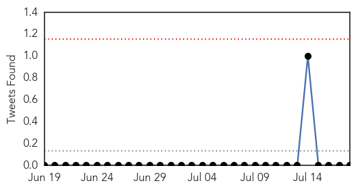
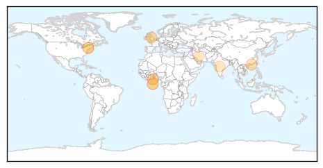
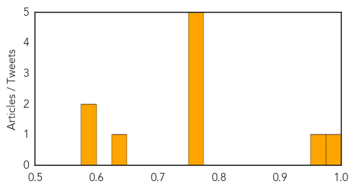

Influenza
30-Day Web Trend
1 alerts, 0 warnings
30-Day Twitter Trend
0 alerts, 0 warnings

Article Locations
Article Confidences
Top Articles:
- 0.991
- Vaccine Associated Narcolepsy Genetically Changing the Brain Forever
- 0.957
- Burden of influenza infection in hospitalised children below 6 months of age and above in Hong Kong from 2005 to 2011.
- 0.751
- July 17, 2015 Archives
- 0.751
- July 17, 2015 Archives
- 0.751
- July 17, 2015 Archives
- 0.751
- July 17, 2015 Archives
- 0.751
- July 17, 2015 Archives
- 0.644
- Online News and Information Portal for Ghanaians In Diaspora
- 0.599
- Avian influenza's effects on backyard chickens, egg prices
- 0.579
- Bird flu outbreak could worsen
Top Tweets:
-
No tweets found for Jul 18, 2015
Chikungunya
30-Day Web Trend
1 alerts, 0 warnings
30-Day Twitter Trend
1 alerts, 0 warnings
Article Locations

Article Confidences

Top Articles:
-
No articles found for Jul 18, 2015
Top Tweets:
-
No tweets found for Jul 18, 2015